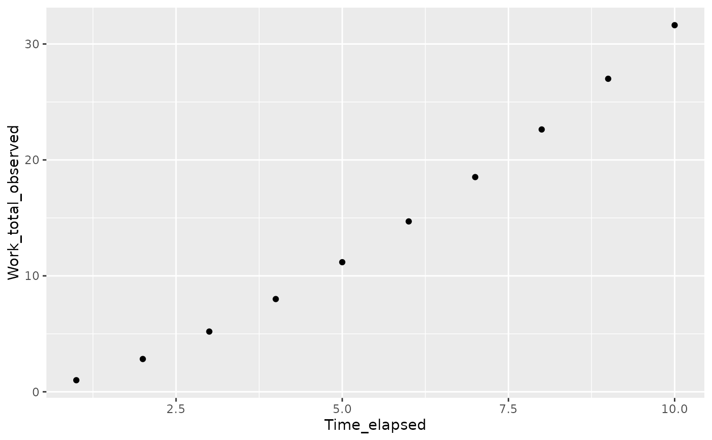
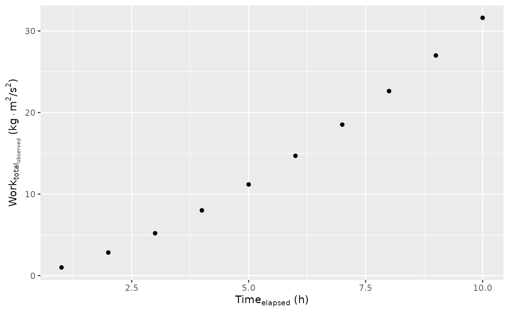

Render Scripted Attributes of Indicated Components by Default
Source:R/enscript.R
enscript.decorated.RdModifies specific attributes of each indicated element (all elements by default).
Arguments
- x
object
- ...
indicated columns, or name-value pairs; passed to
resolveandselected- open
character to precede units
- close
character to follow units
- format
one of 'latex' or 'html'
- scripted
logical; always passed to
resolve.decoratedas FALSE (avoids circularity)
Details
The goal here is to render labels and units (where present) in a way that supports subscripts and superscripts for both plots and tables in either html or latex contexts.
The current implementation writes an 'expression' attribute
to support figure labels and a 'title' attribute to support
tables. ggplot_build.decorated_ggplot will attempt
to honor the expression attribute if it exists.
tablet.data.frame will attempt to honor
the title attribute if it exists (see Details there).
An attempt is made to guess the output format (html or latex).
In addition to the 'title' and 'expression' attributes, enscript() writes
a 'plotmath' attribute to store plotmath versions of factor levels,
where present. By default, factor levels are converted to their
latex or html equivalents. However, ggplot_build.decorated_ggplot
will use the plotmath versions of factor labels for legends and
facet labels. If a 'plotmath' attribute already exists, it is not
overwritten, preventing
the same variable from being accidentally transformed twice.
To flexibly support latex, html, and plotmath, this function
expects column labels and units to be encoded in "spork" syntax.
See as_spork for details and examples.
Briefly, "_" precedes a subscript, "^" precedes a superscript,
and "." is used to force the termination of either a
superscript or a subscript where necessary. For best results,
units should be written using *, /, and ^; e.g. "kg*m^2/s^2"
not "kg m2 s-2" (although both are valid:
see is_parseable). A literal backslash followed by "n"
represents a newline. Greek letters are represented by their names,
except where names are enclosed in backticks.
enscript() always calls resolve() for the indicated
columns, to make units present where appropriate.
See also
Other enscript:
enscript()
Other interface:
canonical.decorated(),
classified.data.frame(),
decorate.character(),
decorate.data.frame(),
desolve.decorated(),
ggplot.decorated(),
io_csv.character(),
io_csv.data.frame(),
io_res.character(),
io_res.decorated(),
io_table.character(),
io_table.data.frame(),
io_yamlet.character(),
io_yamlet.data.frame(),
is_parseable.default(),
mimic.default(),
modify.default(),
promote.list(),
read_yamlet(),
resolve.decorated(),
selected.default(),
write_yamlet()
Examples
library(magrittr)
library(ggplot2)
x <- data.frame(time = 1:10, work = (1:10)^1.5)
x %<>% decorate('
time: [ Time_elapsed, h ]
work: [ Work_total_observed, kg*m^2/s^2 ]
')
x %>% decorations
#> - time
#> - label: Time_elapsed
#> - guide: h
#> - work
#> - label: Work_total_observed
#> - guide: kg*m^2/s^2
x %>% ggplot(aes(time, work)) + geom_point()

x %>% enscript %>% ggplot(aes(time, work)) + geom_point()

x %>% enscript(format = 'html') %$% work %>% attr('title')
#> Work<sub>total<sub>observed</sub></sub> (kg·m<sup>2</sup>/s<sup>2</sup>)
testthat::expect_equal(enscript(x), enscript(enscript(x)))